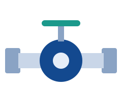
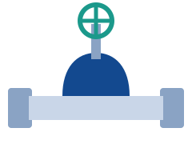
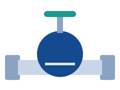
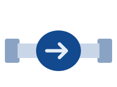
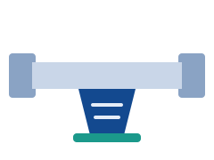

Industrial valves for every flow-control need.

Quarter-turn valves with a spherical ball for fast, tight shut-off. Suitable for water, oil, gas and general industrial service.

Used for full-open or full-close service with minimal flow restriction. Common in water supply, pipelines and process plants.
Compact, lightweight valves with a rotating disc. Ideal for large-diameter lines and quick operation.

Designed for accurate throttling and flow regulation in steam, water and process lines.

Allow flow in one direction only and automatically prevent backflow to protect pumps and equipment.

Remove debris from the flow to protect valves, pumps and meters. Available in Y-type and other designs.
Sizes, materials, end connections and pressure classes are available as per customer requirement. Please send an enquiry for details.